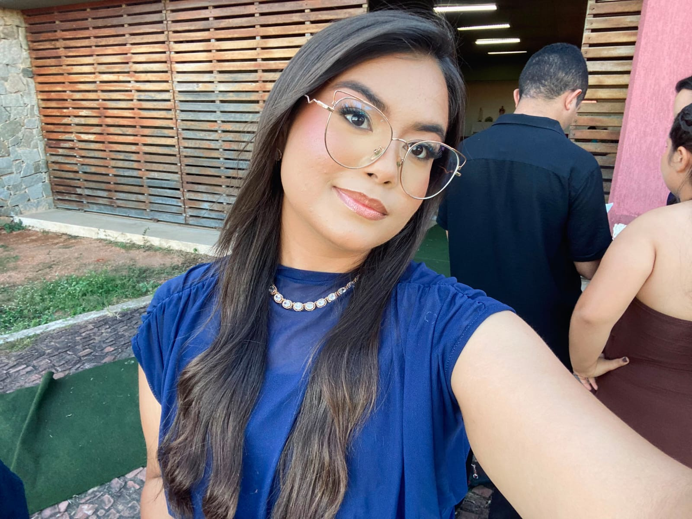
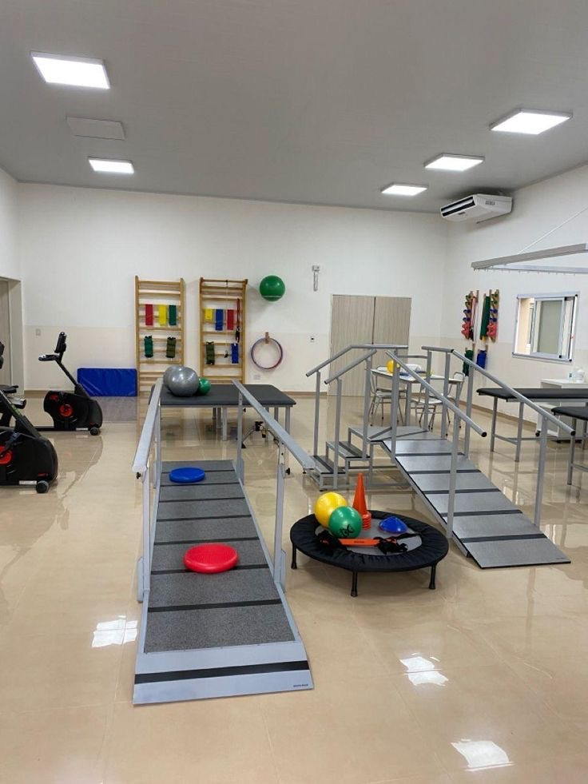

O desenvolvimento da sua criança, um passo de cada vez.
Camila Pereira Bezerra é Terapeuta Ocupacional dedicada a apoiar crianças em cada conquista do seu desenvolvimento, com atenção próxima da família e de cada criança.

Uma trajetória que começa com dedicação total ao cuidado infantil
Graduada em Terapia Ocupacional, Camila está iniciando sua trajetória profissional com uma formação recente e atualizada, unida à disponibilidade de dar atenção próxima e individual a cada criança e cada família.
Acredita que cada criança tem seu próprio tempo de desenvolver habilidades motoras, sensoriais e de autonomia — e que o papel da Terapia Ocupacional é acompanhar esse caminho com paciência, escuta e técnica.
Diferenciais do atendimento
O que orienta cada sessão, desde o primeiro contato até o acompanhamento contínuo.
Escuta antes de tudo
Cada avaliação começa ouvindo a família com calma, para entender rotina, dificuldades e expectativas.
Atenção individual
Cada criança é acompanhada de forma próxima, no seu próprio tempo de desenvolvimento.
Formação atualizada
Conhecimento recente da graduação, aplicado com dedicação a cada atendimento.
Cuidado que continua em casa
Orientação constante aos pais, para que o desenvolvimento seja estimulado também no dia a dia.
Terapia Ocupacional para o desenvolvimento infantil
Um cuidado voltado a ajudar cada criança a ganhar autonomia e confiança nas atividades do seu dia a dia.
Desenvolvimento motor e sensorial
Atividades que estimulam coordenação, equilíbrio e integração sensorial, respeitando o ritmo de cada criança.
Autonomia nas atividades diárias
Apoio para que a criança ganhe independência em tarefas do cotidiano, como vestir-se, alimentar-se e cuidar de si.
Habilidades escolares e coordenação fina
Trabalho voltado a habilidades como escrita, recorte e manuseio de materiais, apoiando o desempenho escolar.
Acompanhamento próximo da família
Orientação contínua aos pais e responsáveis, para que o cuidado continue também em casa.
Um ambiente preparado para o movimento
Estrutura pensada para estimular o desenvolvimento motor e sensorial em um ambiente seguro.

Rampas, barras paralelas e materiais sensoriais usados de forma lúdica durante o atendimento.
Espaço planejado para que a criança se sinta à vontade a cada sessão.
Cada sessão é conduzida de acordo com as necessidades específicas da criança.
Perguntas frequentes
Um pouco mais sobre o que é a Terapia Ocupacional Infantil e como funciona o atendimento.
É a área da saúde voltada a ajudar a criança a desenvolver habilidades motoras, sensoriais e de autonomia necessárias para as atividades do dia a dia, como brincar, comer, vestir-se e aprender.
Dificuldades de coordenação, resistência a texturas, atraso em marcos de desenvolvimento ou dificuldades escolares podem ser sinais. Uma avaliação inicial ajuda a entender se o acompanhamento é indicado.
A primeira consulta é uma conversa com a família para entender a rotina e as necessidades da criança, seguida de uma avaliação inicial que orienta o plano de atendimento.
Sim. A orientação aos pais faz parte do acompanhamento, para que as estratégias trabalhadas em sessão também façam parte da rotina em casa.
Agende uma avaliação
Entre em contato para conhecer melhor o atendimento e agendar uma primeira conversa.
Envie uma mensagem
Preencha os dados abaixo e retornaremos o contato.